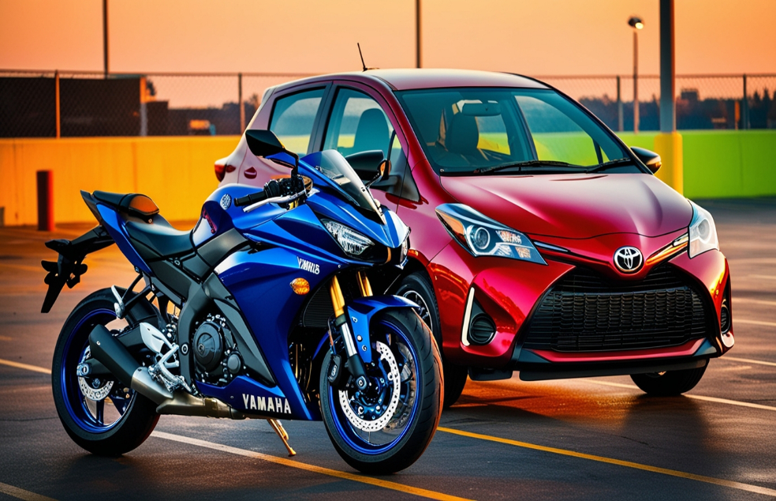
Clases de manejo para principiantes. Además, le ofrecemos preparación para la(s) prueba(s) práctica(s) de manejo, y así obtener la(s) licencia(s) que usted desea, o necesita obtener. Contáctenos, será un gusto servirle, ayudarle y asesorarle en su proceso.
Ver serviciospersonas llevadas, a la sede de su prueba práctica. Y la han aprobado.
personas, han aprobado su prueba teórica.
vehículos se les ha sacado la cita, y han sido llevados a la IVE (Inspección Técnica Vehicular) (DEKRA).
Tratamos de contestar los mensajes a la brevedad posible. Al WhatsApp o alguna otra red social.
Si necesita alguno no dude, en contactarnos
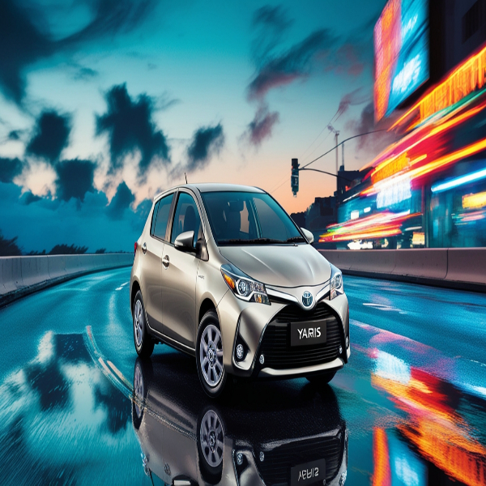
-Principiante.
-Intermedio.
-Avanzado.
-Automático-manual.
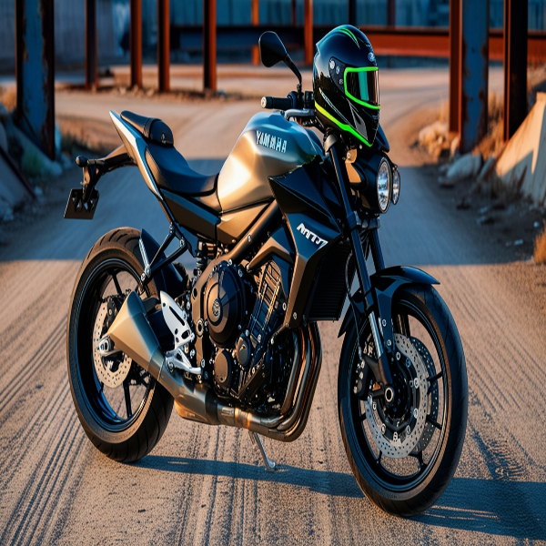
-Principiante.
-Intermedio.
-Avanzado.
-Cualquier cilindraje.
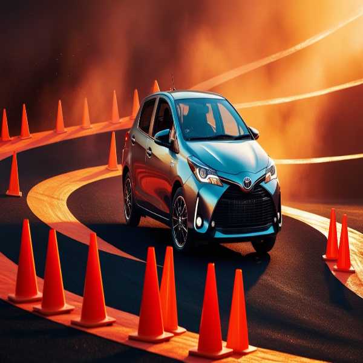
-Práctica de zig-zag y reversa.
-Lo que debe hacer.
-Lo que no debe hacer.
-Consejos y más.
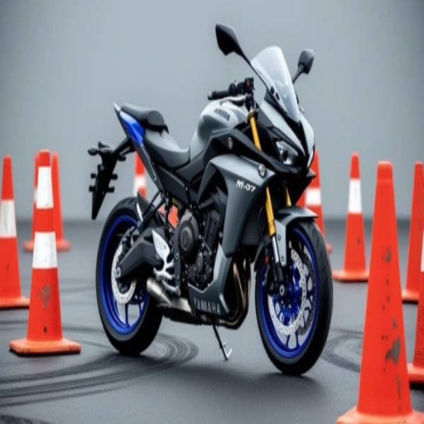
-Práctica de zig zag.
-Lo que debe hacer.
-Lo que no debe hacer.
-Consejos y más.
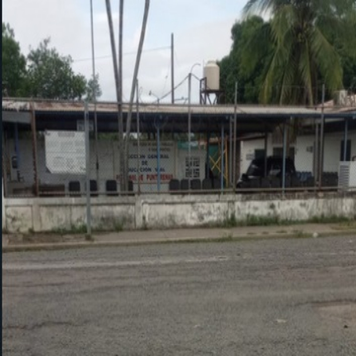
-A cualquiera de las 13 sedes del país.
-Prueba de manejo, licencia tipo B-1.
-Prueba de manejo, licencia tipo A.
-Prueba de manejo para, cualquier otro tipo de licencia.
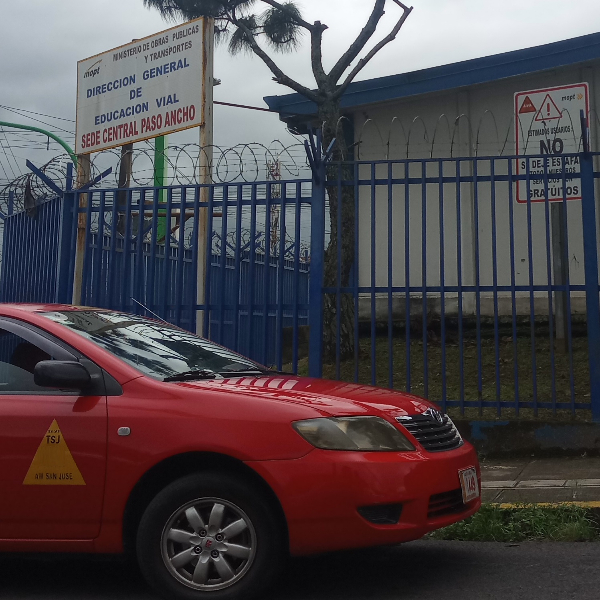
-A cualquiera de las 13 sedes del país.
-Solo escríbanos para ayudarle, si gusta.
-¿Necesita repasar para el examen?
-¿Tiene alguna duda sobre el examen? Contáctenos, si gusta.
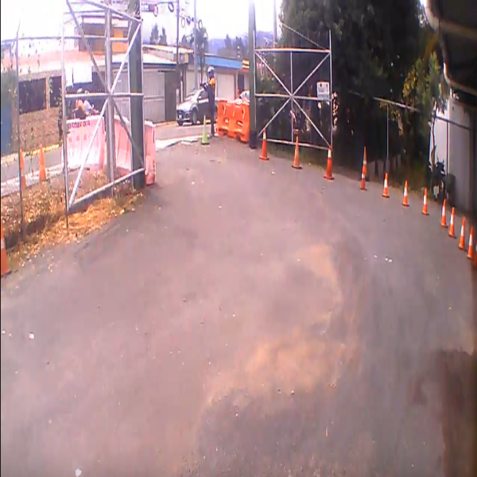
-Si no lo tiene todavía.
-A cualquiera de las, 13 sedes del país.
-Para que pueda matricular tanto, su prueba teórica como práctica.
-Sin el usuario no puede matricular ninguna prueba.
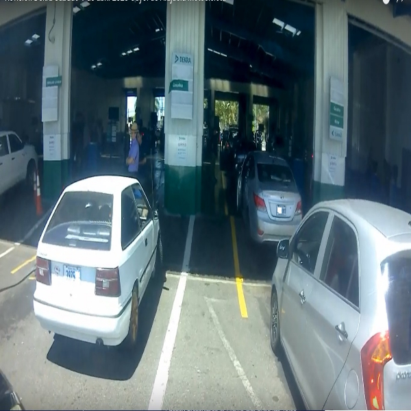
-Automóvil, SUV, Pick up.
-Camión, hasta 8000 KG.
-Moto.
-Taxi.
-Buseta.
-Grabación del recorrido.
La mayoría de la información ha sido tomada de la página web de Educación Vial, del MOPT, de la Ley de Tránsito 9078 y de la página de citas del Banco de Costa Rica.
Las pruebas teóricas y cursos básicos de manejo hoy día, se aprueban con una nota de 70.
Las pruebas prácticas de manejo hoy día, se aprueban con una nota de 80.
-(Categoría 1) Si se cometiera alguna de estas faltas, automáticamente pierde su prueba. Es decir, listo pa' la foto 🤣.
-1. Presentarse a la prueba bajo la influencia de alcohol, drogas o en una condición similar.
-2. Realizar adelantamientos durante la prueba en curvas, intersecciones, pasos a nivel de ferrocarril, puentes, túneles, pasos a desnivel, por los costados de la vía o por el lado derecho, y en zonas marcadas con línea de barrera o línea central continua.
-3. Efectuar giros en U prohibidos en cualquier sección de la prueba práctica.
-4. Desacato a la señalización vertical y horizontal.
-5. Ignorar la luz roja del semáforo, salvo en las excepciones del artículo 104 de la Ley número 9078.
-6. Exceder los 40 km por hora sobre el límite de velocidad establecido en el recorrido de la prueba.
-7. El vehículo presenta una falla mecánica que impide continuar con la evaluación de la prueba práctica.
-8. Llegar más de 5 minutos tarde a la Prueba Práctica de Manejo, después de la hora matriculada.
-9. El vehículo es diferente al registrado según la documentación proporcionada.
-10. La luz de freno principal no funciona correctamente.
-11. Las señales direccionales no funcionan correctamente.
-12. Conducir sobre la acera en cualquier parte del recorrido de la prueba práctica.
-13. Colisionar su vehículo o atropellar a alguien.
-14. Motociclista sufre caída durante la prueba de manejo.
-15. No lleva puesto correctamente el casco de seguridad en moto, bicimoto, triciclo o cuadriciclo.
-16. Conducir a más de 25 km por hora cerca de escuelas, centros de salud o en áreas con alta concentración de personas.
-17. El velocímetro no funciona o solo marca en millas.
-18. Botar y/o tocar cono o señal móvil.
-19. Uso de cualquier dispositivo durante la prueba práctica que requiera liberar alguna mano del volante.
-20. El cinturón de seguridad de tres puntos se encuentra dañado o no está ajustado.
-21. Motociclista se apoya con alguno de sus pies en el suelo, durante su paso en las líneas paralelas o zig-zag.
-22. Conducción de motocicleta fuera de la línea guía, en líneas paralelas.
-23. El vehículo no está adaptado según la recomendación técnica o médica, en el caso de una persona con discapacidad.
-(Categoría 2) Si se cometiera alguna de estas faltas, puede continuar con su prueba. Sin embargo, si comete 2 faltas de esta categoría, pierde la prueba automáticamente.
-1. No encender las luces reglamentarias durante los horarios establecidos por ley.
-2. Rebasar a un vehículo detenido frente a una zona de paso peatonal.
-3. Conducir a más de 30 km por encima del límite establecido.
-4. Motociclista rebasando en medio de vehículos con una velocidad de 25 km por hora, o superior.
-5. Obstruir el paso del tren o ciclovía.
-6. No respetar el orden de prioridad de paso en intersecciones.
-7. No utilizar las señales direccionales.
-8. Uso incorrecto de las señales direccionales.
-9. Llantas en mal estado o desgastadas.
-10. Saca la cabeza fuera del vehículo mientras conduce en reversa.
-11. Motociclista sin la vestimenta retroreflectiva o cinta reflectiva.
-12. Motociclista no enciende la luz durante el inicio o recorrido de prueba.
-13. No ceder el paso a los peatones en las zonas señalizadas o indicadas por la normativa.
-14. No respetar las normas de estacionamiento.
-(Categoría 3) Si se cometiera alguna de estas faltas, puede continuar con su prueba. Sin embargo, si comete 4 faltas de esta categoría, pierde la prueba automáticamente.
-1. Puertas abiertas durante el recorrido en vehículo de transporte público, bus(eta).
-2. Bloquear intersecciones.
-3. Detener el vehículo en señal de CEDA sin justificación alguna.
-4. Vehículo manual se apaga al salir en marcha.
-5. No se ejecutan los cambios de marcha adecuados.
-6. En pendiente, el vehículo se desplaza o retrocede al iniciar la marcha.
-7. Sincronización incorrecta de los mandos del embrague y el acelerador.
-8. No se efectúan los cambios de marcha.
-9. No sabe realizar el cambio de luces.
-10. Freno de mano en mal estado.
-11. Conduce con el freno de mano activado.
-12. Conduce con una sola mano en el volante sin necesidad justificada (algún tipo de discapacidad).
-(Categoría 4) Si se cometiera alguna de estas faltas, puede continuar con su prueba. Sin embargo, si comete 6 faltas de esta categoría, pierde la prueba automáticamente.
-1. Abandono del recorrido oficial de la prueba.
-2. No realiza correctamente el ejercicio mencionado con anterioridad.
-3. Luz de freno superior (tercer luz) en mal estado.
-4. Detiene vehículo completamente, realizando el zig-zag.
-5. Se desvió del carril hacia adelante en la pista de conos.
-6. Detiene el vehículo completamente durante la prueba de reversa.
-7. Mantiene el pie izquierdo encima del pedal de embrague o freno durante el recorrido de la prueba.
-8. Luces altas o bajas defectuosas.
-9. No existencia de "búmper" trasero o delantero, o "guardabarro".
-10. Limpiaparabrisas inexistentes o en mal estado.
-11. Parabrisas de atrás en mal estado.
-12. Parabrisas de adelante en mal estado.
-13. Vidrios de los lados dañados.
-14. Pito defectuoso.
-15. Luces indicadoras de marcha atrás en mal estado o inexistentes.
-16. Gira el torso y voltea el cuerpo al conducir en reversa.
-17. Se desvió del carril completamente, en reversa en la pista de conos.
-18. Luces de emergencia defectuosas.
-19. Falta algún espejo retrovisor lateral.
Desde los 13 años de edad, las personas pueden hacer el curso básico de manejo o únicamente el examen teórico.
La licencia tipo A-1, se puede obtener desde los 16 años. (Es la única a la que un menor de edad puede aspirar) y cumplir con sus respectivos requisitos.
Las licencias tipo A-2 y A-3, se pueden obtener desde los 18 años y cumplir con sus respectivos requisitos.
La licencia B-1, se puede obtener desde los 18 años de edad y cumplir con sus respectivos requisitos.
La licencia B-2, se puede obtener desde los 20 años de edad y cumplir con sus respectivos requisitos.
Las licencias B-3, y B-4, se pueden obtener desde los 22 años de edad y cumplir con sus respectivos requisitos.
Las licencias C-1 y/o C-2, se pueden obtener desde los 21 años de edad y cumplir con sus respectivos requisitos. Además, para aspirar a estas licencias se debe haber aprobado, el curso de relaciones humanas y/o transporte público.
Las licencias tipo D-1, D-2 y D-3 se pueden obtener desde los 18 años de edad y cumplir con sus respectivos requisitos.
-Sí, efectivamente hay otros cursos o modalidades, como por ejemplo:
-1. Curso regular. Se asiste durante una semana a las clases obligatorias y el viernes, que es el último día, presenta el examen.
-2. Curso por tutoría. Tiene una duración de dos días. El estudiante debe asistir obligatoriamente el primer día para resolver dudas, y el segundo día, que marca el cierre de esta modalidad, presenta el examen.
-3. Suficiencia. La persona se prepara por cuenta propia y únicamente se presenta al examen.
-4. Cursos para personas iletradas. El participante debe asistir obligatoriamente a clases durante cuatro días, de lunes a jueves. El quinto día, viernes, se aplica el examen teórico. Además, debe presentar una certificación oficial emitida por la Dirección Regional de Educación correspondiente, que confirme que no ha finalizado los estudios de primaria (I y II ciclos).
-5. Cursos para personas sordas. Asiste durante una semana a las clases obligatorias y el viernes, que es el último día, presenta el examen. Con un curso especial para personas con este tipo de discapacidad.
Las pruebas teóricas y/o prácticas, se pueden realizar en cualquiera de las 13 oficinas de Cosevi a nivel nacional. Siempre y cuando, se encuentren citas disponibles, en la oficina de preferencia, a la hora de realizar su matrícula.
-1. Oficinas centrales, San José.
-2. Oficina en Alajuela.
-3. Oficina en Cartago.
-4. Oficina en Guápiles.
-5. Oficina en Heredia.
-6. Oficina en Liberia.
-7. Oficina en Limón.
-8. Oficina en Nicoya.
-9. Oficina en Pérez Zeledón.
-10. Oficina en Puntarenas.
-11. Oficina en Río Claro.
-12. Oficina en San Carlos.
-13. Oficina en San Ramón.
-Tipo A, Motocicletas-cuadraciclos.
-Tipo B, Liviano-pesado.
-Tipo C, Transporte público.
-Tipo D, Equipo o maquinaria especial.
-Tipo E, Profesionales.
-Licencias para ciclistas sin embargo, estas son opcionales.
-Tipo A-1, permite conducir motos de 0 cc, hasta 125 cc. Cuadras y triciclos, hasta 250 cc. Motores que funcionen con electricidad, hasta 11 Kilowatts de potencia.
-Tipo A-2, permite conducir motos de 126 cc, hasta 500 cc. Cuadras y triciclos, de 251 cc. hasta 500 cc. Motores que funcionen con electricidad, de 11 Kilowatts hasta 35 Kilowatts, de potencia.
-Tipo A-3, permite conducir motos, cuadras de 501 cc, hacia arriba. Motores que funcionen con electricidad mayores a, 35 Kilowatts de potencia.
-En este tipo de licencia, la mayor suprime a la(s) anterior(es).
-Tipo B-1, permite conducir vehículos de hasta 4000 Kg de peso.
-Tipo B-2, permite conducir vehículos entre 4001 Kg, y 8000 Kg de peso.
-Tipo B-3, permite conducir vehículos de 8001 Kg, de peso hacia arriba excepto vehículos articulados.
-Tipo B-4, permite conducir vehículos articulados.
-En este tipo de licencia, la mayor suprime a la(s) anterior(es).
-Tipo C-1, permite únicamente a conducir taxis.
-Tipo C-2, permite únicamente a conducir buses y/o busetas, con placas de transporte público. Si el bus o buseta tiene placas particulares se puede conducir con licencia tipo B, dependiendo del peso del vehículo. Más información sobre licencias tipo B, (pregunta anterior o # 13).
-En este tipo de licencia, la mayor no suprime a la(s) anterior(es). Porque cada una es exclusiva para su respectivo tipo. Sin embargo, si alguna persona cuenta con licencia tipo C-1 y/o C-2 esta suprime a la B-1. Es decir, si cuenta con alguna de las 2 o las 2 no es necesario que renueve la B-1.
-Tipo D-1, permite conducir tractores de llanta.
-Tipo D-2, permite conducir tractores de oruga.
-Tipo D-3, permite conducir cualquier otro equipo especial, que no sea contemplado como D-1 y/o D-2. Por ejemplo: grúas, montacargas, excavadoras, dragas entre otros.
-En este tipo de licencia, la mayor no suprime a la(s) anterior(es). Porque cada una es exclusiva para su respectivo tipo.
-Tipo E-1, Al año de haber adquirido, las licencias tipo: A-3 + B-4.
-Tipo E-2, Al año de haber adquirido, las licencias tipo: A-3 + B-4 + D-1 + D-2 + D-3.
-En este tipo de licencia, la mayor suprime a la(s) anterior(es).
-Aprobación del curso básico de manejo o examen teórico.
-Documento de identificación vigente y en buen estado.
-Placa metálica en el lugar correspondiente y sticker de placa visible.
-Revisión técnica vehicular al día, marchamo y tarjeta de propiedad.
-Certificado médico digital, (Válido por 180 días o 6 meses aproximadamente).
-Si recién se compró o es nueva, se debe presentar placa AGV, esta debe ser original, con el recibo de la compra, (foto)copias no se aceptan.
-Tarjeta válida donde se muestren las características del vehículo, como estilo, color, año, cilindraje.
-Todos los papeles o documentos presentados deben ser originales, no se aceptan (foto)copias.
-Recomendaría tener en cuenta, el tipo de licencia para el cual usted necesita o desea adquirir. Porque este tipo de licencia tiene varios tipos, de acuerdo al cilindraje de la motocicleta para la prueba práctica. Así que, para que tenga cuidado también cuando realiza el pago del examen. Más información, sobre los tipos de licencia, de acuerdo a su respectivo cilindraje, lo puede encontrar en la pregunta # 12.
-La persona debe tener 16 años cumplidos.
-Identificación vigente y en buen estado, de menor de edad o acta de nacimiento.
-Mostrar documento legal de autorización de los padres, curador, tutor o representante legal, validado por un abogado, si el autorizante no está presente.
-Seguro del INS para este tipo de licencia, según las coberturas vigentes.
-Además, cumplir con los requisitos generales para la obtención de licencias Tipo A (pregunta anterior, o # 17).
-Aprobación del curso básico de manejo o examen teórico.
-Documento de identificación vigente y en buen estado.
-La persona debe ser mayor de edad, (18 años).
-Revisión técnica vehicular al día, marchamo y tarjeta de propiedad.
-Certificado médico digital, (Válido por 180 días o 6 meses aproximadamente).
-Vehículo en excelente estado.
-Si recién se compró o es nuevo, hay que presentar la matrícula AGV, esta debe ser original, con recibo de la compra, (foto)copias no se aceptan.
-Todos los papeles o documentos presentados, deben ser originales, no se aceptan (foto)copias.
-Documento de identificación vigente y en buen estado.
-Contar con una licencia clase B o C, emitida hace al menos 2 años.
-Ser mayor de 20 años.
-Revisión técnica vehicular al día, marchamo y tarjeta de propiedad.
-Certificado médico digital, (Válido por 180 días o 6 meses aproximadamente).
-Vehículo en excelente estado.
-Vehículo con un peso entre 4001 kg y 8000 kg.
-Proporcionar tarjeta de pesos y dimensiones.
-Todos los papeles o documentos presentados deben ser originales, no se aceptan (foto)copias.
-Documento de identificación vigente y en buen estado.
-Contar con una licencia clase B o C, emitida hace al menos 3 años.
-Ser mayor de 22 años.
-Revisión técnica vehicular al día, marchamo y tarjeta de propiedad.
-Certificado médico digital, (Válido por 180 días o 6 meses aproximadamente).
-Vehículo en excelente estado.
-Vehículo con un peso superior a 8001 kg, excepto vehículo articulado.
-Proporcionar tarjeta de pesos y dimensiones.
-Todos los papeles o documentos presentados deben ser originales, no se aceptan (foto)copias.
-Documento de identificación vigente y en buen estado.
-Contar con una licencia clase B o C, emitida hace al menos 3 años.
-Ser mayor de 22 años.
-Revisión técnica vehicular al día, marchamo y tarjeta de propiedad.
-Certificado médico digital, (Válido por 180 días o 6 meses aproximadamente).
-Vehículo en excelente estado.
-Vehículos con un peso superior a 8001 kg, y vehículo articulado.
-Proporcionar tarjeta de pesos y dimensiones.
-Todos los papeles o documentos presentados deben ser originales, no se aceptan (foto)copias.
-Documento de identificación vigente y en buen estado.
-Contar con una licencia clase B o C, emitida hace al menos 3 años.
-Aprobación del curso básico de manejo + el curso de transporte público y/o relaciones humanas.
-No se debe llevar a cabo la prueba práctica.
-Tramitar la primera solicitud de esta licencia en el Departamento de Acreditación de Conductores.
-Documento de identificación vigente y en buen estado.
-Contar con una licencia clase B o C, emitida hace al menos 3 años.
-Aprobación del curso básico de manejo + el curso de transporte público y/o relaciones humanas.
-Certificado médico digital, (Válido por 180 días o 6 meses aproximadamente).
-Revisión técnica vehicular al día, marchamo y tarjeta de propiedad.
-Documento original y válido donde se muestren las características del vehículo, como marca, modelo, año, color y capacidad de pasajeros.
-Todos los papeles presentados deben ser originales, no se aceptan (foto)copias.
-Dependiendo de la cantidad de pasajeros de la buseta, o el bus que usted haga su prueba, hay varias restricciones.
-Restricción Técnica 1 (RT-1): Buseta de 25 pasajeros. Si usted hace el examen y lo aprueba, en una buseta de 25 pasajeros o menos, no debería conducir una buseta de 26 o más pasajeros.
-Restricción Técnica 2 (RT-2): Buseta de 26 a 44 pasajeros. Si usted hace el examen y lo aprueba, en una buseta de entre 26 y 44 pasajeros no debería conducir un bus de 45 o más pasajeros.
-Sin Restricción Técnica o abierta, bus de 45 pasajeros o más. Si usted hace el examen y lo aprueba, en este caso podría manejar cualquier buseta o bus.
-Para que lo tome en cuenta, dependiendo de la capacidad de pasajeros del vehículo, que usted presente para realizar la prueba le quedaría, restringida o sin restricción la licencia tipo C-2, y eso sale en la licencia cuando se la entregan, una vez aprobado la prueba práctica.
-Aprobación del curso básico de manejo o examen teórico de manejo.
-La persona debe ser mayor de edad, (18 años).
-Documento de identificación vigente y en buen estado.
-No se debe llevar a cabo la prueba práctica.
-Documento oficial emitido por la Fuerza Pública, la Policía de Tránsito o una entidad pública o privada, que esté debidamente firmado y que certifique el dominio y la destreza del solicitante para manejar el tipo de vehículo requerido.
-Certificado médico digital, (Válido por 180 días o 6 meses aproximadamente).
-Presentar una (foto)copia de la cédula de la persona que suscribe la carta.
-Aclarar el tipo de licencia, es decir, si es para D-1, D-2, D-3 y el tipo de maquinaria correspondiente.
-Aprobación del curso básico de manejo o examen teórico de manejo.
-Sacar cita y solicitarlo, en el Banco de Costa Rica (BCR).
-Documento de identificación vigente y en buen estado.
-Precio del permiso de conducir, es de ₡500.
-Costo por comisión bancaria: ₡2000, a cancelar en el momento de la cita.
-Adquirir la "Póliza de Conducir", la cual es por tres meses y debe llevar la fecha del día de la cita. O para su conveniencia, también, se puede adquirir en el banco, al momento de la gestión del permiso de conducir.
-El costo o el valor de la "póliza de conducir", si se compra en el banco, es de ₡15224.
-Certificado médico digital, (Válido por 180 días o 6 meses aproximadamente).
-El permiso de conducir expira, a los 3 meses.
-Para renovación del permiso de conducir, el mismo debe estar expirado o caducado.
-Si ya realizó el pago del trámite de su permiso, presente el comprobante de pago impreso el día de su cita, asegurándose de que el número de comprobante sea visible.
-Los montos se cancelan únicamente en efectivo, y en colones o con tarjeta BCR solamente.
-Sí, de hecho sí puede. Incluso, por cualquier carretera del país. Sin embargo, se deben cumplir con ciertos requisitos, en dado caso de que lo pare un policía (de tránsito), o en caso de un posible accidente.
-Debe o tiene que andar acompañado de alguien que, tenga más de 5 años de haber obtenido la licencia a la cual usted aspira, o una licencia superior a la que usted aspira a obtener.
-Si es en moto o cuadraciclo, ambos deben ir en el mismo vehículo.
-El permiso temporal de manejo se podría solicitar para cualquier tipo de licencia. Siempre y cuando, cumpliendo los requisitos específicos, para aspirar a cada tipo de licencia, que la persona necesite o requiera.
-Las personas menores de edad, lo pueden solicitar únicamente para la licencia tipo A-1, a partir desde los 16 años cumplidos.
-Haber aprobado la prueba práctica.
-Documento de identificación vigente y en buen estado.
-Costo por comisión bancaria: ₡2000, a cancelar en el momento de la cita.
-El precio de la licencia de conducir, es de ₡4000.
-Los montos se cancelan únicamente en efectivo, y en colones o con tarjeta BCR solamente.
-Si ya realizó el pago del trámite de su licencia, presente el comprobante de pago impreso el día de su cita, asegurándose de que el número de comprobante sea visible.
-Certificado médico digital, (Válido por 180 días o 6 meses aproximadamente).
-La vigencia de la licencia es de 3 años.
-Sacar cita y solicitarla en el Banco de Costa Rica (BCR).
-Documento de identificación vigente y en buen estado.
-Costo por comisión bancaria: ₡2000, a cancelar en el momento de la cita.
-El costo de la licencia tendría un costo de ₡10 000, si tiene multas pendientes.
-Si tiene multas pendientes, se cancelan en el mismo momento de la cita.
-Si no tiene multas, la licencia tiene un costo de ₡5000.
-Los montos se cancelan únicamente en efectivo y en colones o con tarjeta BCR solamente.
-Certificado médico digital, (Válido por 180 días o 6 meses aproximadamente).
-Se puede renovar si usted lo desea 3 meses antes, de la fecha del vencimiento de su licencia actual.
-Si ya realizó el pago del trámite de su licencia, presente el comprobante de pago impreso el día de su cita, asegurándose de que el número de comprobante sea visible.
-La vigencia de la licencia generalmente, es de 6 años. Sin embargo, se le podría otorgar por menos tiempo. Si por ejemplo, tiene puntos acumulados en la licencia. Es decir, si ha cometido infracciones categoría A, o categoría B, que son las que acumulan puntos a la(s) licencia(s). Para consultar, si tiene puntos acumulados o debe de pagar infracciones, sería directamente en el COSEVI. O también, puede revisar en la plataforma virtual del BCR en línea, para ver el monto y pagarlas. O en dado caso, solo verificar, si tiene infracciones pendientes.
-Importante, si las infracciones tienen o poseen, más de 7 años de estar en firme, no tendría que pagarlas, se podría solicitar la prescipción de estas, si así usted lo desea.
-Sacar cita y solicitarlo en el Banco de Costa Rica (BCR).
-Documento de identificación vigente y en buen estado.
-Costo por comisión bancaria: ₡2000, a cancelar en el momento de la cita.
-Si tiene multas pendientes, se cancelan en el mismo momento de la cita.
-El duplicado de licencia tiene un costo de ₡5000.
-Los montos se cancelan únicamente en efectivo y en colones o con tarjeta BCR solamente.
-Para el duplicado deberá faltarle más de 3 meses de vigencia, ya que sino aplicaría como renovación.
-El duplicado conservará la misma fecha de vencimiento de la licencia actual.
-Si ya realizó el pago del trámite de su licencia, presente el comprobante de pago impreso el día de su cita, asegurándose de que el número de comprobante sea visible.
-Importante, si las infracciones tienen o poseen, más de 7 años de estar en firme, no tendría que pagarlas, se podría solicitar la prescipción de estas, si así usted lo desea.
-Documento de identificación vigente y en buen estado.
-Licencia(s), esto aplica para los tipos licencia(s) C-1, C-2, D-1, D-2 y D-3.
-Estar al día y sin morosidad ante la CCSS. Para permisionarios o concesionarios, Además, es necesario no poseer deudas pendientes con FODESAF. (Los extranjeros deben proporcionar su número de asegurado).
-Depósito de ₡200 colones, a la cuenta N°229502-4, del Banco de Costa Rica (IBAN CR58015201001022950242).
-Presentar, Hoja de delincuencia original.
-Si es renovación, deberá aportar el código vencido.
-Para la certificación del código de conductor, presentar (foto)copias de la cédula y de la(s) licencia(s) correspondiente(s).
-1. RF-A: Usa ortesis (pines o tornillos quirúrgicos).
-2. RF-B: Sufre mutilación en alguna de las extremidades.
-3. RF-C: Sordomudo.
-4. RF-D: Sordo
-5. RF-E: Parapecia (parálisis parcial del cuerpo)
-6. RF-F: Extremidad superior no funcional.
-7. RF-G: Ceguera de un ojo.
-8. RF-H: Parálisis de dorsiflexión (problema en la cadera).
-9. RF-I: Secuela de polio en miembro inferior.
-10. RF-1: Usa lentes.
-11. RF-2: Solo puede manejar de día.
-12. RF-3: Conducir solo vehículo automático.
-13. RF-4: Conductor solo vehículos adaptados.
-14. RF-5: Usa lentes de contacto.
-15. RF-6: Usa prótesis.
-16. RF-7: Usa audífonos.
-17. RF-8: Mutilidad ocular.
-18. RF-9: Mutilidad en una de las extremidades
-19. RF-90: Usa lentes bifocales
-20. RF-91: Usa dientes postizos.
-1. RT-1: Solo puede conducir microbuses de 9 hasta 25 pasajeros.
-2. RT-2: Solo puede conducir microbuses de 26 a 44 pasajeros.
-3. RT-3: Solo puede conducir vehículos con adaptaciones especiales.
-4. RT-4: Solo puede conducir triciclos.
-5. RT-5: Solo puede conducir vehículos automáticos.
-6. RT-6: Solo puede conducir cuadraciclos de acuerdo al cilindraje.
-Con el fin de demostrar que se encuentran legalmente en Costa Rica, debe presentarse la Dirección General de Educación Vial y deben aportar:
-1. Personas extranjeras: deben entregar un documento migratorio válido y en condiciones óptimas, tal como lo establece la Dirección General de Migración y Extranjería (DIMEX, cédula de residencia, autorización laboral, constancia de solicitud de refugio, permiso estudiantil, entre otros).
-2. Si no dispone del DIMEX, deberá entregar una constancia de trámite en formato físico o digital, emitida por la Dirección General de Migración y Extranjería, conforme a lo establecido en la modificación del artículo 91 de la Ley N.º 9078.
-3. Ciudadanos costarricenses: deben entregar su documento nacional de identidad (cédula), válido y en buenas condiciones físicas.
-4. Se debe entregar la licencia de conducir que se desea validar; esta debe estar al día y en condiciones óptimas.
-5. Las personas costarricenses o extranjeras que posean una licencia de conducir emitida en un país distinto al de su nacionalidad de origen deberán acreditar, por medios legales, que residían en ese país al momento de obtener dicha licencia. Esto puede demostrarse mediante documentos como: comprobante de residencia, cédula local, permiso de trabajo, solicitud de refugio, sello migratorio en el pasaporte otorgado por Migración o la autoridad competente, número de seguro social, o carnet de estudiante.
-6. Cada país verificará su licencia digital por medio del consulado o embajada, según las reglas vigentes de su prórroga.
-7. Si la licencia de conducir fue emitida en un idioma diferente al español, se debe presentar una traducción oficial realizada por un traductor autorizado por el Ministerio de Relaciones Exteriores y Culto de Costa Rica, conforme a lo establecido en el artículo 3 de la Ley N.º 8142. La traducción puede entregarse en formato digital o impreso.
Nota: En caso de que no haya un traductor oficial debidamente autorizado por el Ministerio de Relaciones Exteriores y Culto de Costa Rica, el usuario podrá presentar una traducción de la licencia de conducir emitida por la embajada o consulado del país que otorgó dicha licencia. Si tampoco existiera representación diplomática en Costa Rica, se permitirá entregar una traducción libre del contenido de la licencia, acompañada de una declaración jurada firmada ante notario público. Además, el usuario deberá adjuntar un documento emitido por el Ministerio de Relaciones Exteriores que confirme la inexistencia de traductores oficiales para ese idioma. Si no hay representación diplomática del país de origen, también deberá presentar constancia oficial del Ministerio que lo respalde
-8. Cuando existan dudas sobre la autenticidad de la licencia de conducir o si esta no cumple con los requisitos de seguridad establecidos por la legislación vial del país correspondiente, será necesario presentar una certificación oficial emitida por la entidad responsable de otorgar licencias en el país de origen. En los casos que lo requieran, dicha certificación deberá estar debidamente apostillada. También se aceptará certificación emitida por la embajada o el consulado correspondiente.
-9. Se debe entregar el pasaporte, ya sea de ciudadanos costarricenses o extranjeros, con vigencia actual y en condiciones físicas adecuadas.
-10. Certificado médico digital, (Válido por 180 días o 6 meses aproximadamente).
-11. Si existe alguna variación en el nombre o los apellidos debido a matrimonio, adopción, reconocimiento, impugnación u otra razón legal, se deberá presentar el documento oficial que respalde dicho cambio, emitido por la autoridad administrativa o judicial competente. Este documento puede entregarse en formato digital (debe ser descargable) y, si está redactado en otro idioma, debe acompañarse de una traducción oficial.
-12. Cuando una persona con licencia extranjera solicite homologar una categoría superior a B-1 o C-2, se reconocerá su experiencia previa siempre que la licencia indique la fecha en que obtuvo dicha categoría y que cumpla con los años de experiencia requeridos. Si la licencia no incluye esa información, deberá presentar una certificación oficial que confirme la fecha de emisión y la categoría que desea homologar en Costa Rica.
-13. Quienes soliciten la homologación de la licencia tipo C-2 deberán completar previamente el curso de transporte público y cumplir con las condiciones establecidas en la Ley de Tránsito N.º 9078.
-14. Las personas extranjeras y costarricenses menores de edad que presenten un permiso o documento de conducir emitido en otro país no podrán homologarlo directamente en Costa Rica, conforme a los convenios internacionales vigentes. Antes de cualquier trámite, se debe realizar un análisis técnico para verificar si dicho documento cumple con los requisitos y condiciones equivalentes a una licencia costarricense.
-15. Para validar licencias digitales emitidas por la República Bolivariana de Venezuela, además de presentar la licencia de conducir, el usuario deberá aportar uno de los siguientes documentos:
-Una certificación consular de datos personales, emitida por el Instituto Nacional de Transporte Terrestre del Ministerio del Poder Popular para el Transporte del gobierno venezolano, que incluya la información del sistema nacional de conductores. Esta certificación debe estar apostillada por la Oficina de Relaciones Consulares del Ministerio del Poder Popular para Relaciones Exteriores de Venezuela.
- O bien: Una constancia emitida por el Consulado de Venezuela en Costa Rica que confirme la acreditación del usuario ante el Instituto Nacional de Transporte Terrestre del Ministerio correspondiente del gobierno de Venezuela.
-16. No haber cometido infracciones o tener multas tipo A y/o B (que son las que acumulan puntos en la(s) licencia(s) según la Ley N.º 9078 y sus modificaciones, durante el año previo a la fecha en que se solicita la homologación de la licencia. (Consultar el inciso f del artículo 84 de dicha ley).
-17. No estar vinculado a ningún delito contemplado en el artículo 254 bis de la Ley N.º 4573 y sus modificaciones, durante el período previo a la solicitud de homologación. (Consultar inciso f del artículo 84 de la Ley N.º 9078 y sus reformas)."
-18. La cita debe gestionarse en línea en www.educacionvial.go.cr.
-19. Se sugiere aportar fotocopias de la documentación.
- Una vez hecho la homologación en la Dirección General de Educación Vial, la persona interesada debe sacar cita y acudir a una oficina del Banco de Costa Rica, para el retiro del tipo de licencia correspondiente, con los siguientes requisitos:
-20. Cédula de identidad vigente y en buen estado.
-21. Certificado médico digital, (Válido por 180 días o 6 meses aproximadamente).
-22. El precio de la licencia de conducir, es de ₡4000.
-23. Costo por comisión bancaria: ₡2000, a cancelar en el momento de la cita.
-24. Si tiene multas pendientes, se cancelan en el mismo momento de la cita.
-Si es para la licencia B-2 debe tener 20 años cumplidos, de acuerdo estipulado a la ley 9078 de Costa Rica.
-Si es para la(s) licencia B-3 y/o B-4 debe tener 22 años cumplidos, de acuerdo estipulado a la ley 9078 de Costa Rica.
-La vigencia de la licencia es de 3 años.
-Registrar el tipo de licencia validada mediante homologación, ya sea en formato escrito o digital.
-Si la homologación aún no aparece en el sistema de DGEV, se recomienda verificar directamente con la entidad.
-En caso de que su licencia de conducir esté vinculada a su pasaporte, deberá acudir a la DGEV para actualizar sus datos y modificar el documento de identificación registrado
-Documento de identificación vigente y en buen estado. Si no no podrá realizar la gestión.
-Los certificados médicos digitales solo serán válidos si se entregan junto con alguno de estos documentos: cédula nacional, carné provisional, cédula diplomática, DIMEX o el número completo SR del trámite migratorio.
-La restricción de vehículos, es aplicada en un horario de 6:00 a.m. a 7:00 p.m.
-Lunes, no deberían entrar a San José, las placas terminadas en 1 y 2.
-Martes, no deberían entrar a San José, las placas terminadas en 3 y 4.
-Miércoles, no deberían entrar a San José, las placas terminadas en 5 y 6.
-Jueves, no deberían entrar a San José, las placas terminadas en 7 y 8.
-Viernes, no deberían entrar a San José, las placas terminadas en 9 y 0.
-Los sábados, domingos, días feriados y períodos de vacaciones escolares, no es aplicada la restricción vehicular.
-Vehículos de emergencias, como ambulancias, bomberos y policías.
-Vehículos de transporte público, taxis de carga también, todos eso sí, debidamente identificados y con sus respectivos permisos.
-Vehículos conducidos por personas con discapacidad, o que se usen para transportarlas, siempre que tengan la identificación correspondiente.
-Vehículos cuyo uso está reservado de forma exclusiva al manejo de emergencias o al mantenimiento de servicios públicos, siempre en el marco de funciones oficiales.
-Los vehículos de carga liviana que se empleen permanentemente en labores de comercio o agricultura podrán ser autorizados, previa entrega de la documentación respectiva, mediante resolución emitida por el Despacho de la Viceministra de Transportes, conforme a la materia.
-Vehículos que movilicen concreto fresco, también denominado concreto hidráulico.
-Vehículos que pertenezcan a compañías dedicadas al alquiler o renta de automóviles, comúnmente conocidas como ‘rent a car’. Para acreditar esta condición, el conductor deberá presentar ante las autoridades de tránsito la documentación que demuestre que el vehículo es propiedad de la empresa arrendadora.
-"Ocupación plena", cuando se transportan mínimo cuatro personas, incluyendo al conductor. Esta condición es clave para acceder a ciertos beneficios de movilidad y sostenibilidad. Esto aplica únicamente, en horarios de 6:00 a.m. a 8:00 a.m. y de 4:30 p.m. a 7:00 p.m.
-Motocicletas.
-Los vehículos que funcionan al 100% con electricidad, o con placas color verde.
Artículos, montos y pérdida de puntos a la licencia de acuerdo al tipo de infracción cometida
-1. Conducir bajo los efectos del alcohol. Además, se le abre expediente judicial, si está por encima del nivel de alcohol en sangre permitido, de acuerdo a la ley.
-2. Conductor que se niegue a una prueba de alcoholemia.
-3. Invadir carril contrario separado con línea continua.
-4. Giro ilegal en U o a la izquierda, donde exista señalamiento que lo prohíba.
-5. Circular a más de 120 km por hora.
-6. Conducir con la licencia suspendida.
-7. Adelantar por el espaldón, por el lado derecho, curvas, intersecciones, cruces de ferrocarril, puentes, túneles y pasos a desnivel.
-8. Conductor que invada el carril adjunto, que se encuentre separado por una línea de barrera de trazo continuo. A excepción de lo establecido en el artículo 100, de la Ley de Tránsito.
-9. Ruido o emisiones de gases, humos o partículas contaminantes que sobrepasen los límites establecidos, de acuerdo con el artículo 38 y el artículo 39 de esta ley.
-1. Llevar niños menores de 12 años, o de estatura menor a 145 cm, sin dispositivo de asiento apropiadado para el niño, en el vehículo.
-2. Llevar niños menores de 5 años en la moto o bicimoto.
-3. No respetar la señal de Alto.
-4. Irrespeto a la señal de alto de la luz roja de un semáforo, excepto lo que está indicado en el artículo 104 de esta ley.
-5. Circular a 40 km por hora, o más velocidad, sobre el límite máximo de velocidad permitido.
-6. Conducir con placa(s) correspondiente(s) o registrada(s), a otro vehículo, placa(s) falsa(s) o alterada(s). Además, se abre investigación judicial, porque son documentos legales y dados únicamente por el Estado.
-7. Conducir y dañar los dispositivos de alerta y prevención del paso del tren, al no respetar la señal de alto, en el derecho de vía ferroviario.
-8. Conducir un vehículo de transporte de materiales peligrosos, en violación de las disposiciones del artículo 115 de la presente ley.
-1. No usar o permitir, que un acompañante no use el cinturón.
-2. Usar el celular (dispositivos similares), mientras conduce.
-3. No usar casco, o usarlo incorrectamente, mientras va en la moto.
-4. Conducir vehículos de carga pesada en zonas urbanas y suburbanas no autorizadas por el MOPT.
-5. Conductor circulando vehículo con exceso de carga en las vías públicas, excepto en lo escrito en el inciso h) y párrafos finales del artículo 114.
-6. Quien maneje o circule en vías públicas con vehículos automotores modificados o adaptados, de acuerdo a lo dispuesto en el artículo 122 de esta ley.
-7. Circulación de vehículo sin los dispositivos retrorreflectivos exigidos.
-8. Conductor que no cumpla con los recorridos y paradas marcados o señalados por el CTP para vehículos de transporte público, excepto en casos fortuitos o fuerza mayor.
-9. Conductor de vehículos de transporte público excediendo la capacidad de pasajeros dada por el CTP.
-10. Conducir vehículo de servicio de transporte público y trasladar pasajeros en el área designada para entrada y salida, en contravención del inciso a) del artículo 51 de esta ley.
-11. Conductor que circule con vehículo sin luces reglamentarias encendidas, desde las 6pm hasta las 6am, o en ocasiones en que se dificulte la visibilidad, como neblina y/o lluvia.
-12. Conductor de vehículos grúa o plataforma que no cumpla con el artículo 113 de esta ley.
-13. Propietario de taxi que no tenga taxímetro o lo tenga alterado.
-14. Conductor de taxi que no use el taxímetro al llevar pasajeros.
-15. Conductor que adelante abusando de la prioridad de paso de los vehículos de emergencia.
-16. Conductor que transite por las aceras con vehículos automotores.
-17. Conductor que realice adelantamientos a vehículos detenidos frente a una zonas peatonales.
-18. Conductor que viole las normas del artículo 126 de la ley, usando el teléfono móvil u otros medios de comunicación mientras conduce, a menos que sean manos libres, o realice actividades no relacionadas con la conducción.
-19. Conducir sin la licencia requerida para el tipo y clase de vehículo, o sin permiso temporal de aprendizaje, o con permiso temporal sin el acompañante debido.
-20. Conductor que exceda los veinticinco kilómetros por hora en vías públicas alrededor de centros educativos con estudiantes, centros de salud, centros de atención a adultos mayores, o lugares de actividades masivas, debidamente señalizados.
-21. Conductor que exceda el límite de velocidad en más de treinta kilómetros por hora, excepto que, se aplique una sanción mayor.
-22. Conductor de transporte público que se niegue a ofrecer servicio a personas adultas mayores o con discapacidad, sin importar la modalidad.
-23. Conductor de bicimoto y motocicleta que adelante entre filas de vehículos a más de veinticinco kilómetros por hora, salvo lo indicado en el inciso g) del artículo 108.
-24. Conductor que circule por debajo de la velocidad mínima establecida en el tramo, con el fin comprobado de congestionar o entorpecer el flujo vehicular.
-25. Propietario de un vehículo que ofrezca servicio de transporte público sin las autorizaciones correspondientes. La misma sanción aplica al conductor que no sea el propietario del vehículo y ofrezca el servicio sin autorizaciones.
-26. Conducir evadiendo el control o la señal de alto en el derecho de vía ferroviario, así como estacionar u obstruir con cualquier tipo de vehículo el derecho de vía ferroviario.
-27. Conductor de vehículo de carga liviana o pesada que incumpla las disposiciones a), b), c), d), e), f) y j) del artículo 114 de esta ley.
-28. Conductor con exceso de pasajeros de acuerdo a la capacidad máxima permitida del vehículo.
-29. Conductor que lleve pasajeros fuera de la cabina en la cajuela o cajón del vehículo, salvo para trabajadores en actividades agrícolas, mantenimiento de servicios públicos, emergencias, o en carreteras cantonales de lastre o tierra.
-30. Conductor que circule un vehículo en vías y horarios restringidos debido a una emergencia nacional decretada.
-1. Parquear(se) en zonas no autorizadas; línea amarilla, cerca de hidrantes, garajes, salidas o entradas, salidas de vehículos de emergencia, lugares de discapacitados).
-2. Vehículo con la revisión técnica vehicular vencida, (DEKRA o empresa a cargo de ello).
-3. Vehículo con el derecho de circulación vencido (Marchamo del año en curso). Además, se expone al retiro de matrículas o placas.
-4. Incumplir o no respetar el uso correcto de luces del vehículo. De 6pm a 6am, o cuando las condiciones del tiempo lo ameriten, como neblina y/o lluvia. Motos luz encendida 24/7, sin excepción.
-5. Propietario de vehículo que lo ponga en circulación con dispositivos que anulen o burlen los aparatos de vigilancia de la Policía de Tránsito.
-6. Conductor que no respete las señales de tránsito verticales u horizontales, así como las indicaciones de la autoridad de tránsito, siempre que no haya una sanción mayor.
-7. Conductor que no respete las prioridades de paso, de acuerdo al artículo 105 de esta ley.
-8. Conductor que no cumpla con las indicaciones para la circulación en rotondas, de acuerdo a lo establecido en el artículo 106 de esta ley.
-9. Conductor que no cumpla con las reglas sobre el uso del carril central de acuerdo al artículo 107 de esta ley.
-10. Conductor que no cumpla con los requisitos de señalamiento de maniobra de acuerdo a lo establecido en el inciso c) del artículo 108 de esta ley.
-11. Conductor que no cumpla con las normas de uso de luces establecidas, de acuerdo al artículo 103 de esta ley, siempre que no haya una sanción mayor.
-12. Conductor de motocicleta o bicimoto que ande sin la debida vestimenta retrorreflectiva.
-13. Conductor que no respete las prohibiciones sobre circulación de vehículos establecidas de acuerdo al artículo 122 de esta ley, salvo que no exista una sanción mayor.
-14. Propietario que ponga en circulación un vehículo con el motor, sistemas de inyección, carburador o control de emisiones alterados, de acuerdo a lo establecido en su tarjeta de Inspección Vehicular (IVE).
-15. Conductor que opere un taxi, o servicio especial de taxi en zonas no autorizadas para recoger pasajeros.
-16. Conductor que ofrezca servicio especial estable de taxi sin tener el contrato correspondiente.
-17. Conductor que no respete las normas sobre maniobras de retroceso establecidas en el artículo 109 de esta ley.
-18. Conductor que circule vehículos en vías con tránsito restringido por disposición de la Dirección General de Ingeniería de Tránsito.
-19. Conductor que con licencia extranjera por más de tres meses después de haber ingresado al país.
-20. Conductor que ingrese a una intersección con luz verde o derecho de vía, si la maniobra obstruye la libre circulación debido al congestionamiento vehicular.
-21. Conductor circulando con vehículos automotores en las playas, salvando las excepciones previstas en la ley.
-22. Conductor de vehículo de transporte público que abastezca combustible mientras transporta pasajeros.
-23. Ciclista en vías públicas donde la velocidad permitida sea igual o mayor a 80 km por hora.
-24. Conductor circulando a más de 20 km por hora por encima del límite máximo establecido, salvo que haya una sanción mayor.
-1. Conducir con la licencia caducada y/o permiso temporal de manejo caducado.
-2. Irrespetar la restricción vehicular.
-3. No portar en el vehículo los implementos de seguridad y herramientas para cambiar llanta(s).
-4. Circular sin placas o con una menos (vehículos como automóviles).
-5. Conductor que provoque lesiones o daños a bienes de manera culposa, siempre que por la naturaleza del hecho o su gravedad, no le sea aplicable otra legislación.
-6. Propietario de vehículo de transporte de carga limitada que lo ponga en circulación infringiendo los requisitos establecidos en el artículo 112 de esta ley.
-7. Conductor que utilice los altoparlantes del vehículo entre las 19:00 y las 7:00 horas, salvo que tenga permiso del MOPT por intereses públicos.
-8. Conductor que utilice los altoparlantes del vehículo a menos de cien metros de clínicas, hospitales, centros de enseñanza e iglesias, cuando en estos lugares se estén llevando a cabo actividades.
-9. Conductor de un vehículo de tránsito lento que circule a menos de cincuenta metros de otro vehículo de tránsito lento.
-10. Conductor que se detenga sobre el señalamiento horizontal, excepto en la señal de alto donde la visibilidad sea insuficiente para avanzar.
-11. Propietario que ponga en circulación un vehículo sin los documentos exigidos en el artículo 4 de esta ley, o conductor que no cuente con la licencia de conducir correspondiente, la cual no es necesario portar físicamente, pudiendo el oficial de tránsito verificar la existencia del permiso por otras vías.
-12. Conductor sujetado de otro vehículo en marcha en vías públicas.
-13. Conductor que infrinja las normas de adelantamiento establecidas en el artículo 108 de esta ley, siempre que no exista una sanción mayor.
-14. Conductor que no ceda el paso a peatones en los lugares señalizados para ello.
-15. Propietario que ponga en circulación un vehículo con las placas reglamentarias ubicadas en un lugar distinto al donde deben de estar.
-16. Evasión del pago de peajes o que no presente el comprobante de pago cuando sea requerido por la autoridad de tránsito.
-17. Conductor que use el pito u otros dispositivos similares para apresurar al vehículo que tiene delante.
-18. Conductor que use el pito a menos de cien metros de hospitales, clínicas, iglesias y centros de enseñanza cuando en estos últimos se estén llevando a cabo actividades.
-19. Conductor que use señales sonoras de manera abusiva sin justificación.
-20. Conductor que ocasione congestión vial al reducir la velocidad, para prestar atención un accidente u otro evento.
-21. Conductor de vehículo sin placas o con menos placas de las reglamentariamente exigidas.
-22. Conductor que utilice los estacionamientos preferenciales, sin cumplir las condiciones previstas en el artículo 96 de esta ley.
-23. Circulación de un vehículo cuyas características físicas inscribibles hayan sido modificadas sin cumplir con el deber de informar lo estipulado en el artículo 13 de esta ley.
-24. Propietario que ponga en circulación un vehículo sin cumplir con los requisitos establecidos en el título II, capítulo I, sección V de esta ley, siempre que no exista una sanción mayor.
-25. Propietario que ponga en circulación un vehículo de transporte público sin la rotulación exigida en esta ley.
-26. Persona enseñando a andar bicicleta en vías públicas donde la velocidad autorizada sea superior a 40 km por hora.
-27. Ciclista que ande en la acera
-28. Persona que circule en vías públicas con patinetas, patines u otros vehículos no autorizados, de acuerdo a lo que dice el artículo 124 de esta ley.
-29. Peatón que transite por las vías públicas en violación de las disposiciones establecidas en los incisos a), b), c), d) y e) del artículo 120 de esta ley, siempre que no haya una sanción mayor aplicable.
Si necesita alguno no dude, en contactarnos
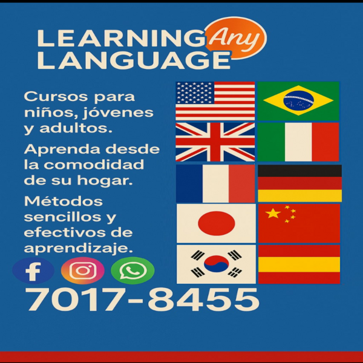
-Cursos de idiomas en línea.
-Niños, jóvenes y adultos.
-Escríbanos o contáctenos.
-Aprenda su idioma favorito o para trabajo.
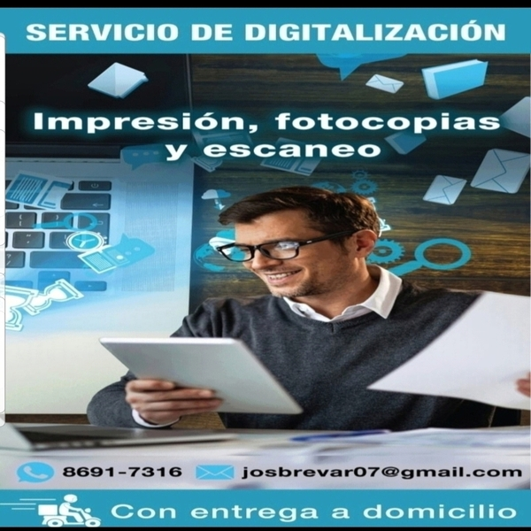
-Con entrega a domicilio.
-Escaneo de documentos.
-(Foto)copias a blanco y negro.
-(Foto)copias a color.
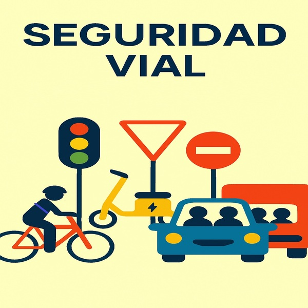
-Consejos como conductor.
-Consejos como motociclista.
-Consejos como peatón.
-Consejos como ciclista.
-Concientización.
-Página personal.
-Página para negocio.
-Página para emprendimiento.
-Destaque más allá.
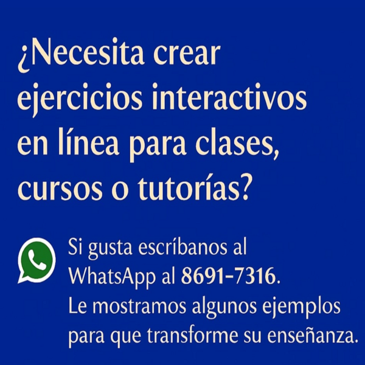
-Idiomas.
-Matemáticas.
-Estudios sociales.
-Ciencias.
-Otros.
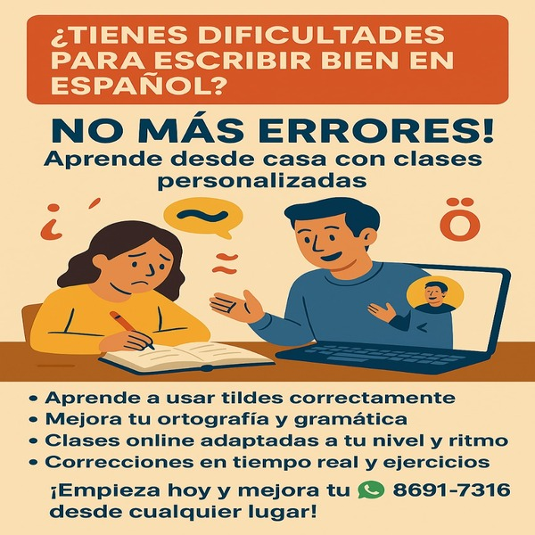
-Aquí le ayudamos.
-Solo escríbanos para ayudarle.
-Mejore su ortografía.
-Correcciones y ejercicios.
-100% en línea.
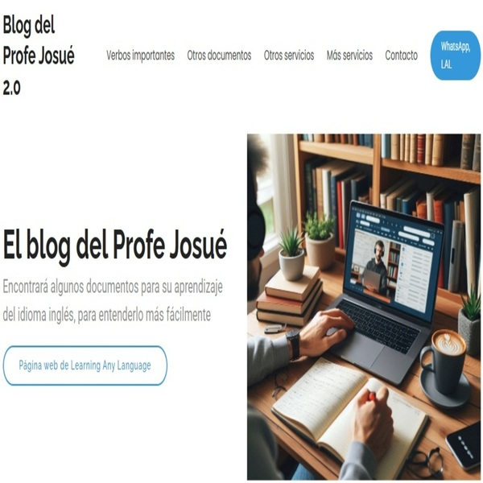
-Algunos documentos para entender inglés más fácil.
-Algunos ejercicios para aprender inglés más fácilmente.
-Clases de inglés personalizadas o en grupo.
-¡Es hora de aprender inglés!
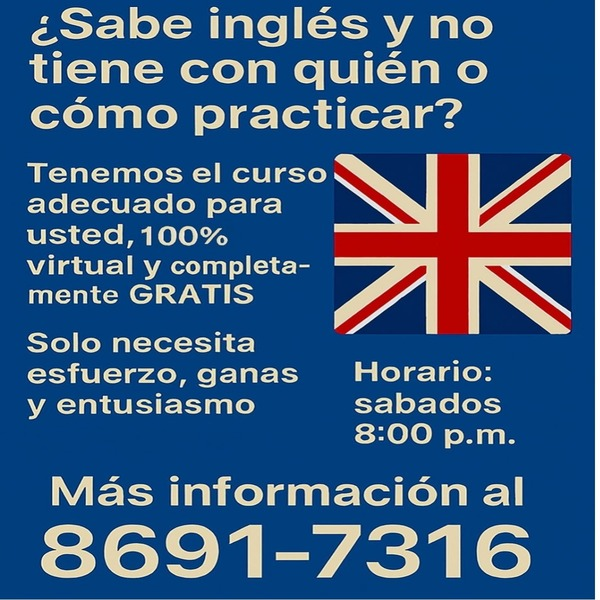
-Lo esperamos los sábados 8:00 p.m.
-100% virtual.
-Aproveche la oportunidad.
-Escríbanos si le interesa.
¡Estamos a su completa disposición y para servirle!